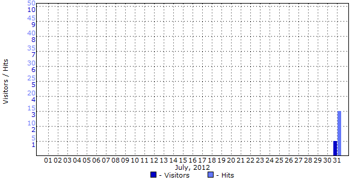
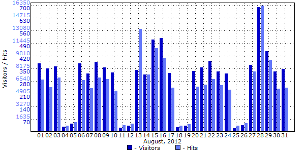

| Date |
Hits |
Reloads |
Cached |
Incomplete
Requests |
Visitors |
Data transfer(GB) |
| Tuesday, July, 31, 2012 |
15 |
1 |
12 |
0 |
1 |
0.000 |
| Wednesday, August, 1, 2012 |
6756 |
1509 |
2011 |
24 |
380 |
3.217 |
| Thursday, August, 2, 2012 |
5783 |
1482 |
2326 |
37 |
351 |
1.641 |
| Friday, August, 3, 2012 |
7002 |
1859 |
3492 |
7 |
362 |
0.061 |
| Saturday, August, 4, 2012 |
849 |
471 |
646 |
0 |
30 |
0.006 |
| Sunday, August, 5, 2012 |
1281 |
501 |
800 |
0 |
46 |
0.008 |
| Monday, August, 6, 2012 |
6729 |
2552 |
3477 |
36 |
380 |
4.788 |
| Tuesday, August, 7, 2012 |
5626 |
1528 |
2166 |
31 |
322 |
1.639 |
| Wednesday, August, 8, 2012 |
7059 |
2090 |
3124 |
53 |
387 |
2.175 |
| Thursday, August, 9, 2012 |
6819 |
1752 |
2404 |
37 |
357 |
0.626 |
| Friday, August, 10, 2012 |
5307 |
1637 |
1937 |
28 |
330 |
0.062 |
| Saturday, August, 11, 2012 |
861 |
454 |
640 |
0 |
24 |
0.006 |
| Sunday, August, 12, 2012 |
1048 |
488 |
742 |
0 |
35 |
0.007 |
| Monday, August, 13, 2012 |
13284 |
7770 |
8960 |
54 |
344 |
0.135 |
| Tuesday, August, 14, 2012 |
7425 |
2259 |
3914 |
21 |
317 |
2.270 |
| Wednesday, August, 15, 2012 |
10852 |
2345 |
3454 |
56 |
510 |
1.717 |
| Thursday, August, 16, 2012 |
9597 |
2411 |
3445 |
40 |
519 |
0.109 |
| Friday, August, 17, 2012 |
5722 |
1806 |
2266 |
44 |
327 |
0.091 |
| Saturday, August, 18, 2012 |
804 |
456 |
664 |
0 |
26 |
0.005 |
| Sunday, August, 19, 2012 |
1004 |
478 |
653 |
8 |
35 |
0.008 |
| Monday, August, 20, 2012 |
5861 |
1391 |
2064 |
17 |
336 |
0.086 |
| Tuesday, August, 21, 2012 |
6122 |
1641 |
2336 |
56 |
356 |
0.622 |
| Wednesday, August, 22, 2012 |
6840 |
2378 |
3414 |
77 |
394 |
0.641 |
| Thursday, August, 23, 2012 |
6042 |
1590 |
2326 |
27 |
335 |
0.160 |
| Friday, August, 24, 2012 |
5470 |
1393 |
1819 |
23 |
323 |
0.076 |
| Saturday, August, 25, 2012 |
843 |
467 |
662 |
0 |
22 |
0.007 |
| Sunday, August, 26, 2012 |
1163 |
501 |
676 |
0 |
37 |
0.011 |
| Monday, August, 27, 2012 |
7845 |
2252 |
3902 |
20 |
370 |
0.599 |
| Tuesday, August, 28, 2012 |
16313 |
3233 |
4056 |
14 |
690 |
1.222 |
| Wednesday, August, 29, 2012 |
9332 |
1960 |
3106 |
28 |
446 |
1.138 |
| Thursday, August, 30, 2012 |
5561 |
1687 |
2259 |
26 |
335 |
0.053 |
| Friday, August, 31, 2012 |
5710 |
1361 |
2074 |
9 |
349 |
0.056 |
|
Description: This report contains information about visitor activity for each day of the report period. The report demonstrates the general effectiveness of your efforts to promote your website. You can also trace seasonal fluctuations in visitor activity to plan promotional work for more favorable times.
|
|